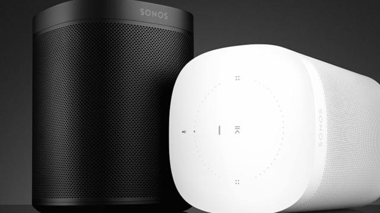
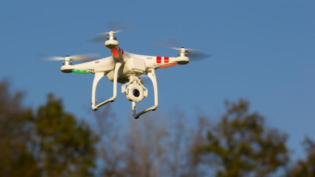

Sonos presenteert nieuwe luidspreker met stembediening
Sonos heeft woensdag zijn eerste slimme speaker aangekondigd. De Sonos One werkt met spraakbediening via Amazon Alexa.
De Sonos One-speaker lijkt qua ontwerp veel op de bestaande Play:1, maar met een ring op de bovenkant. In het apparaat zijn zes microfoons geplaatst om spraak te herkennen. Dat gaat aanvankelijk via Alexa van Amazon. Volgend jaar wordt Google Assistant toegevoegd.
Als de microfoon actief is, brandt er een lampje bij het microfoon-icoon. Gebruikers kunnen de microfoon uitschakelen, zodat de luidspreker niet meeluistert. Volgens Sonos is dit toegevoegd om de privacy van gebruikers te waarborgen.
De Sonos One verschijnt op 24 oktober in Nederland voor 229 euro. Stembediening werkt nog niet in het Nederlands op de luidspreker.
AirPlay 2
Bestaande Sonos-apps gaan ook met Alexa werken, als gebruikers een gekoppelde Amazon Echo-speaker of Echo Dot hebben. Sonos kondigde aan dat de functie tot volgend jaar in publieke bèta is.
Verder wordt ook Apple's AirPlay 2 toegevoegd aan Sonos-speakers. Gebruikers met een iPhone of iPad kunnen dan muziek of geluid van video's via de luidspreker van Sonos afspelen. De update komt op een nog onbekende datum volgend jaar beschikbaar.

Drones moeten tijdens proef medicijnen bezorgen op Schiermonnikoog
Tijdens een proef moeten drones worden ingezet om medicijnen te vervoeren naar het waddeneiland Schiermonnikoog.
De test is een samenwerking van UMCG Ambulancezorg en ANWB Medical Air Assistance, meldt Omrop Fryslân.
Tijdens de test worden drie drones ingezet om in totaal dertig vluchten uit te voeren. Daarbij vliegen de drones vanaf een niet nader genoemde locatie naar de helikopterhaven op het eiland.
De gemeente Schiermonnikoog is akkoord gegaan met de vluchten, maar benadrukt alleen toestemming te geven voor medische vluchten. Commerciële vluchten hoopt de gemeente te weren, omdat ze de rust verstoren.
De provincie Friesland moet nog formeel instemmen met het initiatief.
Tanzania
De startup Zipline zet in andere landen al drones in om snel medicijnen te bezorgen. Dat doet het bedrijf sinds augustus dit jaar bijvoorbeeld in Tanzania
Data miljoenen gebruikers reactieplatform Disqus gestolen
Gebruikersdata van 17,5 miljoen gebruikers van reactieplatform Disqus is bij een hack gestolen. De hack vond al in 2012 plaats, maar komt nu pas aan het licht.
Dat meldt Disqus zaterdagnacht in een verklaring. Disqus biedt een platform dat op veel sites wordt gebruikt om bezoekers onder artikelen te laten reageren.
Disqus werd op 5 oktober door een beveiligingsonderzoeker gewaarschuwd voor een mogelijk lek. Later die dag bleek er inderdaad sprake van zo'n hack, en begon Disqus met het ondernemen van stappen.
De hack vond al in 2012 plaats. Een hacker wist toen data van 17,5 miljoen gebruikers te stelen, die zich tussen 2007 en 2012 bij het platform hebben aangemeld.
Versleutelde wachtwoorden
De gestolen data bevat e-mailadressen, gebruikersnamen, login- en registratiedatums. Bovendien is van éénderde van de getroffen gebruikers het wachtwoord gestolen.
Die gestolen wachtwoorden waren wel versleuteld met het beveiligingsalgoritme SHA1. Toch worden de wachtwoorden van alle getroffen gebruikers gereset.
Disqus zegt geen aanwijzingen te hebben dat de gestolen data grootschalig op internet beschikbaar is geweest. Ook zegt het bedrijf dat er niets wijst op ongeautoriseerde inlogpogingen.
Russen in Silicon Valley anders behandeld na Russische cyberaanvallen
Russen in Silicon Valley worden anders behandeld nadat hackers uit Rusland de VS aanvielen tijdens de Amerikaanse verkiezingen.
Dat blijkt uit een rondgang van The New York Times in San Francisco, waar tienduizenden Russische immigranten wonen om te werken in de techindustrie.
De krant sprak met meerdere in Rusland geboren ingenieurs die zeggen anders behandeld te worden sinds de spanningen tussen de VS en Rusland oplopen.
Volgens advocaten zouden sommige bedrijven beperken welke data programmeurs afkomstig uit het buitenland mogen inzien. Investeerders afkomstig uit Rusland merken dat startups hun geld minder snel aannemen, uit angst voor Russische invloed.
Bij andere bedrijven zouden Russische programmeurs juist in trek zijn, omdat het land een reputatie begint te krijgen voor zijn getalenteerde hackers.
Amerikaanse verkiezingen
Rusland wordt onder andere beschuldigd van een grote cyberaanval op de Verenigde Staten tijdens de afgelopen presidentscampagne, waarbij zou zijn ingebroken op servers van de Democratische Partij. Daarbij hadden hackers toegang tot e-mails, die later werden gelekt.
Rusland ontkent betrekking bij cyberaanvallen op de VS. Hacks in het land zouden worden uitgevoerd door 'patriotische' Russen waar de overheid volgens president Poetin geen invloed over heeft.
Nepnieuws
Tegelijkertijd staat Rusland centraal in een tweede kwestie binnen de Amerikaanse techindustrie. Het bedrijf zou advertenties tijdens de verkiezingen hebben ingekocht bij grote sociale media, waarmee bezoekers onder andere werden doorverwezen naar nepnieuws over verkiezingskandidaten.
Zowel Facebook als Twitter spreken volgende maand voor het Amerikaanse congres over de door Rusland ingekochte reclame. Facebook zei onlangs dat ongeveer 10 miljoen Amerikanen de Russische verkiezingsreclame te zien kregen.